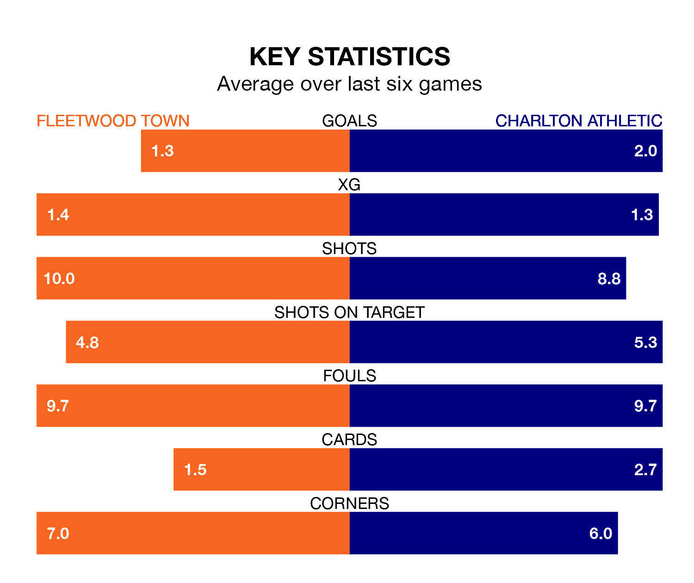

Charlton Athletic face Fleetwood Town on Saturday seeking to protect their long unbeaten run in EFL League One.
The Addicks are unbeaten in seven, with three wins and four draws, ahead of the 3pm kick-off.
They face a Fleetwood team who have won one and drawn five over the same number of games.
In Alfie May, Charlton have the league's most on-form striker so far this season. He has notched 20 goals in 35 appearances.
His goal rate of one every 146 minutes is quicker than that of Jayden Stockley, Fleetwood's top scorer with a goal every 214 minutes, and a total of nine goals in 32 games.
Town are 22nd in the table after 38 games, of which they have won seven and drawn 12, earning 33 points.
Athletic are six places ahead of the Cod Army in 16th, with 10 wins and 14 draws putting them on 44 points.
In the last 10 years, Fleetwood and Charlton have played each other on 13 occasions. Fleetwood won two of them, Charlton five, and they drew six times.
On average, the Cod Army scored 1.0 goal and the Addicks 1.4 in those matches.
Their last meeting was on September 2, when Charlton won 2-1 at home.
With 40 goals in 38 games so far this season, the hosts are scoring at below the league average rate with 1.1 goals per game. And they are conceding more than average, letting in 60 goals at a rate of 1.6 per game.
The Addicks, meanwhile, are above average scorers, with 1.5 goals per game, compared to a league average of 1.3. They have also conceded 1.5 goals per game.
Fleetwood's last match was on Tuesday, a 0-0 draw against Bristol Rovers.
Charlton beat Carlisle United 3-2 last time out, on March 9, with May (two) and Daniel Kanu on the scoresheet.
Saturday's match will be refereed by Tom Reeves, who has taken charge of 13 EFL League One games so far this season, issuing three red cards and booking 43 players. He has awarded four penalties.
The last Fleetwood game Reeves refereed was a 1-0 home loss to Lincoln City on October 21. He is yet to oversee a match featuring Charlton this season.
Updated: 15:10 (UTC), 15/03/24